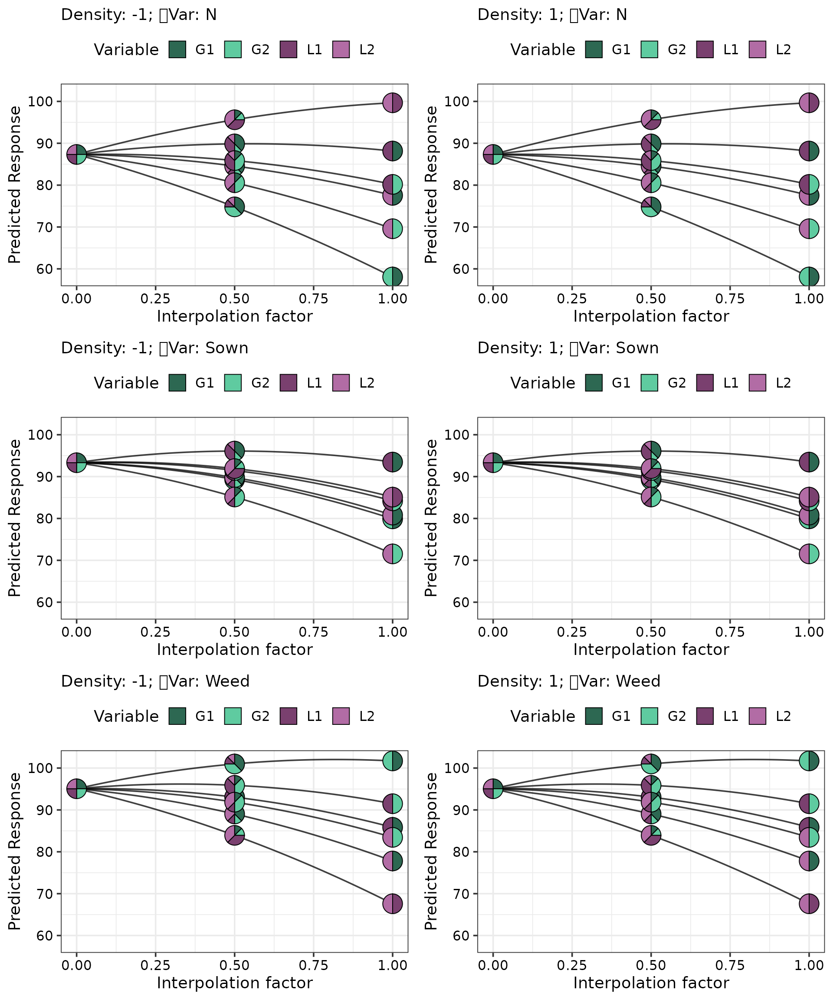

Using DImodelsVis with regression models fit using the `DImodelsMulti` R package
DImodelsVis-with-DImodelsMulti-models.RmdLoading necessary libraries
library(DImodels)
library(DImodelsVis)
library(DImodelsMulti)
library(dplyr)
library(ggplot2)Data exploration
Load data
head(dataBEL)
#> Plot G1 G2 L1 L2 Density Var VarNum Y
#> 1 1 0.7 0.1 0.1 0.1 1 Sown 1 104.156
#> 2 1 0.7 0.1 0.1 0.1 1 Weed 2 100.058
#> 3 1 0.7 0.1 0.1 0.1 1 N 3 87.996
#> 4 2 0.1 0.7 0.1 0.1 1 Sown 1 82.547
#> 5 2 0.1 0.7 0.1 0.1 1 Weed 2 89.801
#> 6 2 0.1 0.7 0.1 0.1 1 N 3 72.239Model fitting
# Name of compositional predictors (species)
species <- c("G1", "G2", "L1", "L2")
# Functional groupings of species
FG <- c("Gr", "Gr", "Le", "Le")
# Colours to be used for pie-glyphs for all figures
pie_cols <- get_colours(vars = species, FG = FG)
model <- DImulti(prop = species, FG = FG, y = "Y",
eco_func = c("Var", "un"),
unit_IDs = "Plot", DImodel = "AV",
extra_fixed = ~ Density,
method = "REML", data = dataBEL)
model
#> Note:
#> Method Used = REML
#> Correlation Structure Used = un
#> Average Term Model
#> Theta value(s) = 1,1,1
#>
#> Generalized least squares fit by REML
#> Model: Y ~ 0 + Var:((G1_ID + G2_ID + L1_ID + L2_ID + AV) + Density)
#> AIC BIC logLik
#> 546.6895 601.3295 -249.3448
#>
#> Multivariate Correlation Structure: General
#> Formula: ~0 | Plot
#> Parameter estimate(s):
#> Correlation:
#> 1 2
#> 2 0.768
#> 3 -0.172 0.386
#>
#>
#> Table: Fixed Effect Coefficients
#>
#> Beta Std. Error t-value p-value Signif
#> ----------------- -------- ----------- -------- ---------- -------
#> VarN:G1_ID +49.744 5.279 9.422 3.435e-14 ***
#> VarSown:G1_ID +66.403 4.382 15.154 4.284e-24 ***
#> VarWeed:G1_ID +74.745 8.892 8.406 2.672e-12 ***
#> VarN:G2_ID +33.803 5.279 6.403 1.367e-08 ***
#> VarSown:G2_ID +47.874 4.382 10.925 6.141e-17 ***
#> VarWeed:G2_ID +86.027 8.892 9.675 1.17e-14 ***
#> VarN:L1_ID +93.968 5.279 17.799 4.453e-28 ***
#> VarSown:L1_ID +75.000 4.382 17.115 4.386e-27 ***
#> VarWeed:L1_ID +54.307 8.892 6.108 4.65e-08 ***
#> VarN:L2_ID +72.789 5.279 13.787 6.904e-22 ***
#> VarSown:L2_ID +49.665 4.382 11.334 1.138e-17 ***
#> VarWeed:L2_ID +38.226 8.892 4.299 5.293e-05 ***
#> VarN:AV +67.685 11.012 6.147 3.96e-08 ***
#> VarSown:AV +86.495 9.140 9.464 2.879e-14 ***
#> VarWeed:AV +83.296 18.546 4.491 2.636e-05 ***
#> VarN:Density1 -1.261 3.072 -0.410 0.6827
#> VarSown:Density1 +2.290 2.550 0.898 0.3721
#> VarWeed:Density1 +0.991 5.173 0.192 0.8486
#>
#> Signif codes: 0-0.001 '***', 0.001-0.01 '**', 0.01-0.05 '*', 0.05-0.1 '+', 0.1-1.0 ' '
#>
#> Degrees of freedom: 90 total; 72 residual
#> Residual standard error: 8.412329
#>
#> Marginal variance covariance matrix
#> N Sown Weed
#> N 70.767 45.118 -20.506
#> Sown 45.118 48.753 38.136
#> Weed -20.506 38.136 200.730
#> Standard Deviations: 8.4123 6.9823 14.168
model_diagnostics(model = model, which = c(1, 2), nrow = 1)
model_diagnostics(model = model, which = c(1, 2), nrow = 2) +
facet_wrap(~Var)
grad_data <- get_equi_comms(4, variables = c("G1", "G2", "L1", "L2")) %>%
mutate("Rich." = Richness,
"Density" = factor(1, levels = c(-1, 1)))
gradient_change(model = model, data = grad_data, nrow = 1)
conditional_ternary(model = model, resolution = 1,
tern_vars = c("G1", "G2", "L2"),
conditional = data.frame(L1 = c(0, 0.25, 0.5)),
lower_lim = 30, upper_lim = 110, nlevels = 8,
add_var = list("Density" = factor(1, levels = c(-1, 1))),
nrow = 3)
grouped_ternary(model = model, resolution = 1,
FG = c("G", "G", "L1", "L2"),
# Split of species within each group
values = c(0.5, 0.5, 1, 1),
lower_lim = 30, upper_lim = 110, nlevels = 8,
add_var = list("Density" = factor(1, levels = c(-1, 1))),
nrow = 3)
eff_data <- get_equi_comms(4, variables = c("G1", "G2", "L1", "L2")) %>%
mutate("Rich." = Richness)
visualise_effects(model = model, data = eff_data,
add_var = list("Density" = factor(-1, levels = c(-1, 1))),
var_interest = c("L1", "L2"), nrow = 3)
# The centroid community (starting point for the straight line)
starts <- tribble( ~G1, ~G2, ~L1, ~L2,
0.25, 0.25, 0.25, 0.25)
# The six binary mixtures (ending points for the straight lines)
ends <- tribble(~G1, ~G2, ~L1, ~L2,
0.5, 0.5, 0, 0,
0.5, 0, 0.5, 0,
0.5, 0, 0, 0.5,
0, 0.5, 0.5, 0,
0, 0.5, 0, 0.5,
0, 0, 0.5, 0.5)
# Create the visualisation
simplex_path(model = model,
add_var = list("Density" = factor(-1, levels = c(-1, 1))),
starts = starts, ends = ends,
nrow = 1)
pred_data <- get_equi_comms(4, richness_lvl = c(1, 2, 4),
variables = c("G1", "G2", "L1", "L2")) %>%
mutate(labels = c("G1_mono", "G1_mono", "G1_mono", "L2_mono",
"G1-G2", "G1-L1", "G1-L2", "G2-L1", "G2-L2", "L1-L2",
"Centroid")) %>%
add_add_var(add_var = list("Var" = c("N", "Sown", "Weed"))) %>%
mutate(G1_ID = G1, G2_ID = G2, L1_ID = L1, L2_ID = L2,
"Density" = factor(-1, levels = c(-1, 1)),
AV = DI_data_E_AV(prop = 1:4, data = .)$AV,
"Rich." = Richness)
prediction_contributions_data(data = pred_data, model = model,
bar_labs = "labels",
groups = list("G1" = 1:3, "G2" = 4:6,
"L1" = 7:9, "L2" = 10:12,
"AV" = 13:15, "Density" = 16:18)) %>%
prediction_contributions_plot(colours = c(pie_cols, "#303030", "steelblue3"),
nrow = 3) +
facet_grid(~ Rich., scale = "free_x", space = "free_x") +
theme(axis.text.x = element_text(angle = 45, hjust = 1.1, vjust = 1.1))